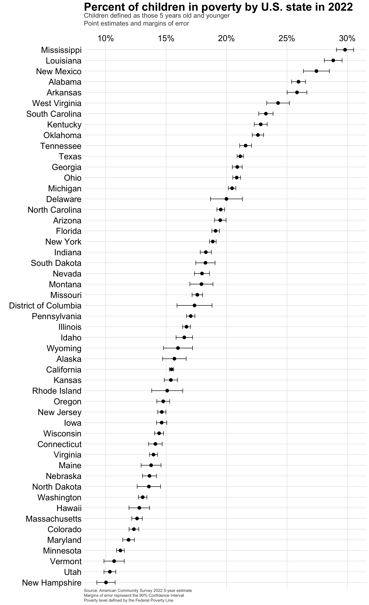

I’ve used data from the U.S. Census Bureau several times, and for this project, I wanted to reacquaint myself with the tidycensus:: package to gather and wrangle data. I also wanted to use the usmap:: package to generate a simple U.S. map, and the gt:: package to display the data in a nice table format.
Loading the scales:: package to transform ggplot scales simply (some people choose to explicitly define scales:: in their code rather than loading the library).
2
The janitor::clean_names() function tidies the column names of your dataset to use the snake case convention. Very handy!
3
The glue:: package allows for simple addition of HTML to ggplot graphics.
4
The gt:: library provides functionality for creating ggplot-esque tables.
5
The first time that you’re working with the tidycensus:: package, you need to request an API key at https://api.census.gov/data/key_signup.html. The install= argument will install your personal key to the .Renviron file, and you won’t need to use the census_api_key() function again.
Data
For this analysis, I’m interested in looking at the most recent state-level child poverty data available from the U.S. Census Bureau. The tidycensus:: package allows API access to the decennial Census, as well as the more frequent American Community Survey (ACS), which I’ll use in this project.
If you’ve worked with ACS data before, you may know that there are a few survey products offered in the ACS suite. Most commonly, the choice of data is between the 1-year estimates and the 5-year estimates.
What’s the difference between these, and how do you choose which survey product to use for your purposes?1
Feature
ACS 1-Year Estimates
ACS 5-Year Estimates
Data Collection Period
12 months
60 months
Population Coverage
Areas with 65,000 or more people
All geographic areas, including those with fewer than 65,000 people
Sample Size
Smallest
Largest
Reliability
Less reliable due to smaller sample size
More reliable due to larger sample size
Currency
Most current data
Less current, includes older data
Release Frequency
Annually
Annually
Best Used For
Analyzing large populations, when currency is more important than precision
Analyzing small populations, where precision is more important than currency
Example Usage
Examining recent economic changes
Examining trends in small geographic areas or small population subgroups
To start, I am interested in reviewing the most stable, geographically-available data on child poverty. Given that I’m less concerned with recency and more interested in broad availability, the ACS 5-year estimates are what I’ll use here.
Initial tour of key tidycensus::get_acs() function
The tidycensus:: package has so much to offer (and I still have plenty to learn!). The tidycensus::load_variables() function provides a simple way to query the available data within each survey. Combining this with stringr::str_detect() is a nice way to search through the tens of thousands of data series that are available through the U.S. Census API.
This searches all variable labels for “Under 5 years” to help identify data of interest.
# A tibble: 240 × 4
name label concept geography
<chr> <chr> <chr> <chr>
1 B01001A_003 Estimate!!Total:!!Male:!!Under 5 years Sex by Age (W… tract
2 B01001A_018 Estimate!!Total:!!Female:!!Under 5 years Sex by Age (W… tract
3 B01001B_003 Estimate!!Total:!!Male:!!Under 5 years Sex by Age (B… tract
4 B01001B_018 Estimate!!Total:!!Female:!!Under 5 years Sex by Age (B… tract
5 B01001C_003 Estimate!!Total:!!Male:!!Under 5 years Sex by Age (A… tract
6 B01001C_018 Estimate!!Total:!!Female:!!Under 5 years Sex by Age (A… tract
7 B01001D_003 Estimate!!Total:!!Male:!!Under 5 years Sex by Age (A… tract
8 B01001D_018 Estimate!!Total:!!Female:!!Under 5 years Sex by Age (A… tract
9 B01001E_003 Estimate!!Total:!!Male:!!Under 5 years Sex by Age (N… tract
10 B01001E_018 Estimate!!Total:!!Female:!!Under 5 years Sex by Age (N… tract
# ℹ 230 more rows
For this demo, I’ll use the following series:
B01001_003: Estimate!!Total:!!Male:!!Under 5 years (all racial groups)
B01001_027: Estimate!!Total:!!Female:!!Under 5 years (all racial groups)
B17001_004: Estimate!!Total:!!Income in the past 12 months below poverty level:!!Male:!!Under 5 years
B17001_018: Estimate!!Total:!!Income in the past 12 months below poverty level:!!Female:!!Under 5 years
There are a bunch of useful helper functions/arguments to assist in fetching data from the Census API. Some noteworthy ones include:
Each variable returns the geography, an estimate, and the margin of error (“moe”). Geographies can span from states, regions and the country as a whole, down to areas like school districts, voting districts, census block groups, and many others.
survey=: this defines the produce that you’re using of the American Community Survey. Responses can include “acs1”, “acs3”, or (the default) “acs5”.
summary_var=: often the variable that you want would be made more meaningful as a ratio or with a demonminator. For example, the number of children in poverty could be useful on its own, but you’re likely to want to see that series as a percent of the total children. With the summary_var argument, you can tell the function which secondary variable you want to grab in the same API call.
ouput=wide: related to the above, I wanted to look at child poverty in a way that would require multiple summary variables (e.g. the percent of girls and boys in poverty). Since you can only have one summary variable, output='wide' allows you to grab all of the series that you may need in the same call.
geometry=TRUE: this argument returns the geospatial data in tidy format to create quick ggplot-based maps using geom_sf().
You can combine point estimates for gender-based poverty by simply adding them, but you can’t do the same for margins of error. The estimated margins of error for each estimate are based on their respective samples and the uncertainty in them. To re-weight the margins of error, you take the square root of the sum of squared margins of error:
Removing Puerto Rico because it’s not within a U.S. Census region.

Quick mapping with usmap::
The usmap:: package makes rendering a map of the US quick and easy. Though it’s not meant to replace sf:: or packages that allow for more sophisticated maps, it does allow for a quick way to make a U.S. map. For this demo, I’ll plot the state-level poverty data that I collected and manipulated in earlier steps.
This shows that child poverty – those living below the Federal Poverty Line – is concentrated in southern and southeastern states (as a percent of the child population).
(perc_poverty_map <-plot_usmap(regions ='states',data = df,values ='perc_u5_in_poverty') +scale_fill_viridis_c(option ='inferno', labels = scales::percent_format()) +labs(title =md("**Estimated child poverty in U.S. states in 2022**"),subtitle ="as a % of the total child population under 5 y.o.",caption ="Source: 2022 American Community Survey") %>%theme(legend.position ='top',legend.title =element_blank()))
Great tables with gt::
(df_tbl <- df %>%select(state, region, total_u5_povertyE, total_u5_popE, perc_u5_in_poverty) %>%filter(state !='Puerto Rico') %>%arrange(-perc_u5_in_poverty) %>%# mutate(u5_perc_in_poverty = u5_perc_in_poverty * 100) %>% gt(groupname_col ="region") %>%cols_label(state ='State',total_u5_popE ='Total children < 5 y.o.',total_u5_povertyE ='Total children < 5 y.o. living in poverty in last 12 mos.',perc_u5_in_poverty ='% of children < 5 y.o. living in poverty in last 12 mos.') %>%# formatting numeric fieldsfmt_number(columns =c(total_u5_popE, total_u5_povertyE), decimals =0, use_seps =TRUE) %>%fmt_percent(columns = perc_u5_in_poverty, decimals =1) %>%#add table titletab_header(title =md("**Estimated child poverty in U.S. states in 2022**"),subtitle ="Total and Percent estimates of those living below the Federal Poverty Line") %>%tab_source_note(source_note ="Data from 2022 American Community Survey 5-year estimates from the U.S. Census Bureau") %>%#apply new style to all column headerstab_style(locations =cells_column_labels(columns =everything()),style =list(#thick bordercell_borders(sides ="bottom", weight =px(3)),#make text boldcell_text(weight ="bold") ) ) %>%#apply different style to titletab_style(locations =cells_title(groups ="title"),style =list(cell_text(weight ="bold", size =24) )) %>%data_color(columns = perc_u5_in_poverty,palette = viridis::inferno(100) ) %>%opt_all_caps() %>%opt_table_font(font =list(google_font("Chivo"),default_fonts() ) ) %>%tab_options(#remove border between column headers and titlecolumn_labels.border.top.width =px(3),column_labels.border.top.color ="transparent",#remove border around the tabletable.border.top.color ="transparent",table.border.bottom.color ="transparent",#adjust font sizes and alignmentsource_notes.font.size =12,heading.align ="left" ))
7
Removing Puerto Rico because it’s not within a U.S. Census region.
Estimated child poverty in U.S. states in 2022
Total and Percent estimates of those living below the Federal Poverty Line
State
Total children < 5 y.o. living in poverty in last 12 mos.
Total children < 5 y.o.
% of children < 5 y.o. living in poverty in last 12 mos.
South
Mississippi
53,126
178,246
29.8%
Louisiana
83,556
289,842
28.8%
Alabama
75,754
291,856
26.0%
Arkansas
46,838
181,324
25.8%
West Virginia
21,928
90,380
24.3%
South Carolina
65,876
283,281
23.3%
Kentucky
60,852
266,553
22.8%
Oklahoma
55,918
247,466
22.6%
Tennessee
86,868
402,591
21.6%
Texas
406,500
1,923,422
21.1%
Georgia
132,692
635,299
20.9%
Delaware
10,792
53,990
20.0%
North Carolina
115,116
589,767
19.5%
Florida
210,898
1,104,565
19.1%
District of Columbia
7,204
41,522
17.3%
Virginia
68,948
494,148
14.0%
Maryland
42,630
358,539
11.9%
West
New Mexico
31,806
115,927
27.4%
Arizona
78,418
402,636
19.5%
Nevada
32,000
178,103
18.0%
Montana
10,574
59,003
17.9%
Idaho
18,578
112,576
16.5%
Wyoming
5,240
32,789
16.0%
Alaska
7,684
48,991
15.7%
California
348,758
2,258,308
15.4%
Oregon
31,846
215,756
14.8%
Washington
57,488
440,172
13.1%
Hawaii
10,806
84,552
12.8%
Colorado
39,118
317,189
12.3%
Utah
24,774
239,517
10.3%
Midwest
Ohio
140,956
676,403
20.8%
Michigan
113,090
552,803
20.5%
Indiana
74,890
409,573
18.3%
South Dakota
10,602
58,085
18.3%
Missouri
63,320
360,175
17.6%
Illinois
120,326
721,165
16.7%
Kansas
27,780
180,483
15.4%
Iowa
27,766
189,797
14.6%
Wisconsin
46,366
321,594
14.4%
Nebraska
17,338
127,312
13.6%
North Dakota
7,018
51,717
13.6%
Minnesota
38,206
340,546
11.2%
Northeast
New York
211,592
1,121,872
18.9%
Pennsylvania
117,306
688,571
17.0%
Rhode Island
8,174
54,172
15.1%
New Jersey
76,718
523,995
14.6%
Connecticut
25,786
182,768
14.1%
Maine
8,690
63,182
13.8%
Massachusetts
44,218
351,208
12.6%
Vermont
3,024
28,275
10.7%
New Hampshire
6,306
62,919
10.0%
Data from 2022 American Community Survey 5-year estimates from the U.S. Census Bureau
Deep dive: Colorado results
df_colorado <-get_acs(geography ='county',# using the state argument to only fetch Coloradostate ="Colorado",survey ='acs5',variables =c(male_u5_pop ='B01001_003', female_u5_pop ='B01001_027', male_u5_poverty ='B17001_004', female_u5_poverty ='B17001_018'),year =2022,output ='wide')
Getting data from the 2018-2022 5-year ACS
(df_tbl2 <- df_colorado %>%select(county, region, total_u5_povertyE, total_u5_popE, perc_u5_in_poverty) %>%arrange(-perc_u5_in_poverty) %>%gt(groupname_col ="region") %>%cols_label(county ='County',total_u5_popE ='Total children < 5 y.o.',total_u5_povertyE ='Total children < 5 y.o. living in poverty in last 12 mos.',perc_u5_in_poverty ='% of children < 5 y.o. living in poverty in last 12 mos.') %>%# formatting numeric fieldsfmt_number(columns =c(total_u5_popE, total_u5_povertyE), decimals =0, use_seps =TRUE) %>%fmt_percent(columns = perc_u5_in_poverty, decimals =1) %>%#add table titletab_header(title =md("**Estimated child poverty in Colorado by county in 2022**"),subtitle ="Total and Percent estimates of those living below the Federal Poverty Line") %>%tab_source_note(source_note ="Data from 2022 American Community Survey 5-year estimates from the U.S. Census Bureau") %>%#apply new style to all column headerstab_style(locations =cells_column_labels(columns =everything()),style =list(#thick bordercell_borders(sides ="bottom", weight =px(3)),#make text boldcell_text(weight ="bold") ) ) %>%#apply different style to titletab_style(locations =cells_title(groups ="title"),style =list(cell_text(weight ="bold", size =24) )) %>%data_color(columns = perc_u5_in_poverty,palette = viridis::inferno(100) ) %>%opt_all_caps() %>%opt_table_font(font =list(google_font("Chivo"),default_fonts() ) ) %>%tab_options(#remove border between column headers and titlecolumn_labels.border.top.width =px(3),column_labels.border.top.color ="transparent",#remove border around the tabletable.border.top.color ="transparent",table.border.bottom.color ="transparent",#adjust font sizes and alignmentsource_notes.font.size =12,heading.align ="left" ))
Estimated child poverty in Colorado by county in 2022
Total and Percent estimates of those living below the Federal Poverty Line
County
Total children < 5 y.o. living in poverty in last 12 mos.
Total children < 5 y.o.
% of children < 5 y.o. living in poverty in last 12 mos.
Southern
Otero
782
1,053
74.3%
Bent
160
227
70.5%
Huerfano
184
325
56.6%
Kiowa
50
123
40.7%
Pueblo
2,580
9,249
27.9%
Las Animas
178
666
26.7%
Prowers
204
792
25.8%
Conejos
108
471
22.9%
Baca
38
168
22.6%
Crowley
36
173
20.8%
Saguache
62
306
20.3%
Rio Grande
118
589
20.0%
Costilla
24
166
14.5%
Alamosa
80
967
8.3%
Mineral
0
31
0.0%
Mountain
Chaffee
274
767
35.7%
Fremont
488
2,014
24.2%
Clear Creek
46
271
17.0%
Grand
76
652
11.7%
Eagle
284
2,744
10.3%
Teller
92
938
9.8%
Park
28
598
4.7%
Summit
14
1,026
1.4%
Custer
0
80
0.0%
Gilpin
0
202
0.0%
Jackson
0
47
0.0%
Lake
0
313
0.0%
Pitkin
0
807
0.0%
Western
Montezuma
398
1,229
32.4%
Delta
370
1,376
26.9%
La Plata
444
2,484
17.9%
Moffat
134
805
16.6%
Mesa
1,208
8,212
14.7%
Garfield
374
3,975
9.4%
Montrose
188
2,067
9.1%
Archuleta
44
567
7.8%
Routt
44
1,028
4.3%
San Miguel
8
229
3.5%
Rio Blanco
10
415
2.4%
Dolores
0
64
0.0%
Gunnison
0
577
0.0%
Hinsdale
0
23
0.0%
Ouray
0
145
0.0%
San Juan
0
16
0.0%
Eastern
Washington
58
217
26.7%
Morgan
476
2,065
23.1%
Yuma
112
684
16.4%
Logan
182
1,168
15.6%
Kit Carson
68
465
14.6%
Lincoln
30
253
11.9%
Sedgwick
14
190
7.4%
Elbert
64
1,125
5.7%
Phillips
16
336
4.8%
Cheyenne
0
118
0.0%
Front Range
Adams
4,928
34,100
14.5%
Denver
5,386
39,520
13.6%
El Paso
6,040
46,014
13.1%
Arapahoe
4,618
38,209
12.1%
Weld
2,606
22,760
11.4%
Boulder
1,464
13,358
11.0%
Larimer
1,446
16,353
8.8%
Jefferson
1,992
28,086
7.1%
Broomfield
86
3,509
2.5%
Douglas
404
19,682
2.1%
Data from 2022 American Community Survey 5-year estimates from the U.S. Census Bureau
Conclusion
In this first tidycensus:: post, I demonstrated:
How to fetch data from the U.S. Census Bureau
A simple way to search for the type of data that you’re interested in exploring
How to use some of the tidycensus:: functions and arguments to support in data wrangling, including re-weighting the margin of error when combining estimates
How to make a simple map using the usmap:: package
How to make a clean and visually appealing table using the gt:: package
Footnotes
See the Census handbook for great detail: https://www.census.gov/programs-surveys/acs/library/handbooks/general.html.↩︎